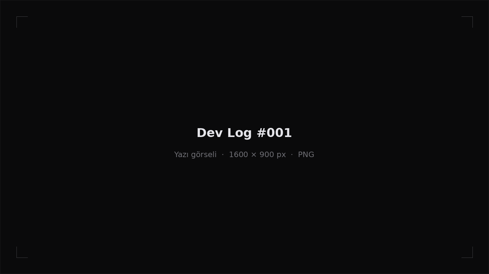

#001
Günlük başlıyor

Chasing the Shlump için geliştirme günlüğümüz açıldı. Bu sayfada oyunun yapım sürecini, aldığımız kararları ve ortaya çıkan yeni görselleri paylaşacağız.
Burada neler olacak
- Tasarım ve mekanik notları
- Ekran görüntüleri ve konsept çalışmaları
- Güncelleme duyuruları
Yeni yazılardan haberdar olmak için Discord sunucumuza katılabilirsiniz.